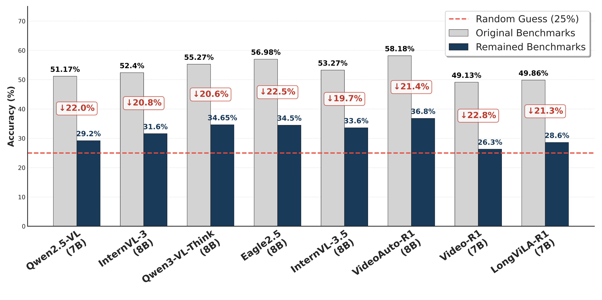
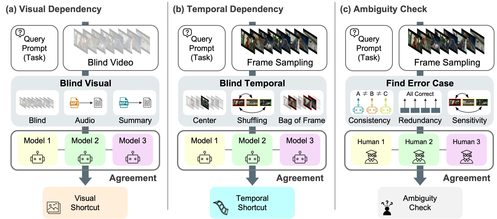

TL;DR: Video-Oasis rethinks the current benchmark landscape by examining whether proliferating video benchmarks truly satisfy shared criteria for genuine video understanding.

The inherent complexity of video understanding makes it difficult to attribute whether performance gains stem from visual perception, linguistic reasoning, or knowledge priors. While many benchmarks have emerged to assess high-level reasoning, the essential criteria that constitute video understanding remain largely overlooked.
Instead of introducing yet another benchmark, we take a step back to re-examine the current landscape of video understanding. In this work, we provide Video-Oasis, a sustainable diagnostic suite designed to systematically evaluate existing evaluations and distill spatio-temporal challenges for video understanding. Our analysis reveals two critical findings: (1) 54% of existing benchmark samples are solvable without visual input or temporal context, and (2) on the remaining samples, state-of-the-art models exhibit performance barely exceeding random guessing.
To bridge this gap, we investigate which algorithmic design choices contribute to robust video understanding, providing practical guidelines for future research. We hope our work serves as a standard guideline for benchmark construction and the rigorous evaluation of architecture development.
Video benchmarks are rapidly expanding, but high scores do not always imply genuine video understanding. Many video-QA samples can be answered using language priors, audio cues, captions, or single-frame evidence. Here, we first expose such non-video shortcuts through concrete cases. These examples reveal why video benchmarks must explicitly require both visual grounding and temporal reasoning.
tmp
tmp
tmp
tmp
tmp
tmp
tmp
tmp
If benchmark scores faithfully measure video understanding, stronger performance should indicate better spatio-temporal reasoning. However, we find that high benchmark accuracy often coincides with high shortcut ratios.

On the video-native challenges, state-of-the-art models achieve performance only marginally above the random-chance level.

The whole process of analysis and filtering out shortcuts is dubbed VideoOasis (V-Oasis). The V-Oasis diagnosis reveals the core spatio-temporal challenges.

@article{lim2026videooasis,
author = {Geuntaek Lim and Sungjune Park and Jaeyun Lee and Inwoong Lee and Taeoh Kim and Dongyoon Wee and Minho Shim and Yukyung Choi},
title = {Video-Oasis: Rethinking Evaluation of Video Understanding},
journal = {arXiv preprint arXiv:2603.29616},
year = {2026},
}